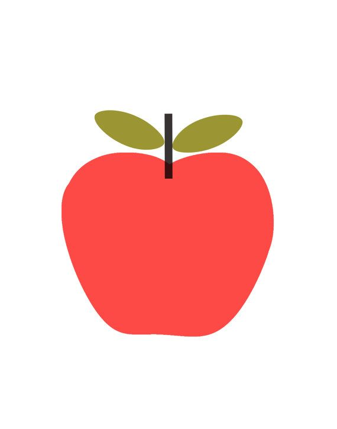

Dies ist ein Typoblindtext. An ihm kann man sehen, ob alle Buchstaben da sind und wie sie
aussehen. Manchmal benutzt man Worte wie Hamburgefonts, Rafgenduks oder Handgloves, um Schriften zu
testen. Manchmal Sätze, die alle Buchstaben des Alphabets enthalten - man nennt diese Sätze
»Pangrams«.